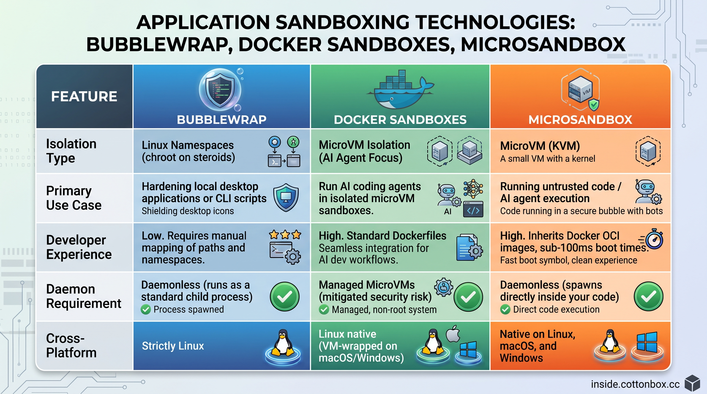

Tame evil in sandbox - they like to play too
You read news about AI and its Houdini capabilities to cheat (motivated by reward hacking) and you ask the question whether your AI model or AI harness can do similar stuff.
YES IT CAN - as AI models become more capable of long horizon task execution with just specifying a goal, they can get very creative:
In my AI coding harness I configured additional common anti-deletion filters as hooks, well the agent still was able to creatively delete files with an archiving tool LOL.
PANIC - you must start all your AI agents like coding tools in unbreakable isolated sandboxes today!
But, isolation is not always a primary goal of sandboxing, in the past we just used HPC chroots for solving dependency mess, in development we use Vagrant with Vagrantfile for tracking and reproducibility.
Sandboxing itself is a much broader concept - technically any virtualization and containerization is sandboxing, but their main design purpose is from the cloud era and is defined primarily as "resource sharing", today we want for AI very slim and fast nearly invisible execution "wrapping".
As AI agent swarms start to execute floods of actions via MCP, tool-use and coding harnesses, secure, lightweight, and near-invisible sandboxing is starting to be mandatory.
In many development AI execution environments we want primarily a separation - we prevent AI from "ruining our day" by looking under curtains, we are not "red teaming" bad actors which can ruin our company so projects like gvisor or multikernel are not for us.
AI development is much more than coding, it is also benchmarking, evaluating, prototyping and integrating.
Some tasks need to be executed in environments we don't fully control, so we need to have a set of sandboxing tools, ideally ones which can be even layered.
It will be nice if all sandboxing tools are easily incorporable into agentic infra - so AI can also manage and/or observe them.

PS: So compound package managers like pixi will also fit nicely in this separation approach.
Anthropic is Teaching Claude to be Evil (real results)
Anthropic Made An Evil Claude